Safe navigation is essential for autonomous systems operating in hazardous environments, especially when multiple agents must coordinate using just visual inputs over extended time horizons. Traditional planning methods excel at solving long-horizon tasks but rely on predefined distance metrics, while safe Reinforcement Learning (RL) can learn complex behaviors using high-dimensional inputs yet struggles with multi-agent, goal-conditioned scenarios. Recent work combined these paradigms by leveraging goal-conditioned RL (GCRL) to build an intermediate graph from replay buffer states, pruning unsafe edges, and using Conflict-Based Search (CBS) for multi-agent path planning. Although effective, this graph-pruning approach can be overly conservative, limiting mission efficiency by precluding missions that must traverse high‐risk regions. To address this limitation, we propose RB-CBS, a novel extension to CBS that dynamically allocates and adjusts user-specified risk bound (Δ) across agents to flexibly trade off safety and speed. Our improved planner ensures that each agent receives a local risk budget (δ) enabling more efficient navigation while still respecting overall safety constraints. Experimental results demonstrate that this iterative risk-allocation framework yields superior performance in complex environments, allowing multiple agents to find collision-free paths within the user-specified (Δ).
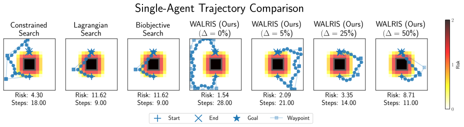
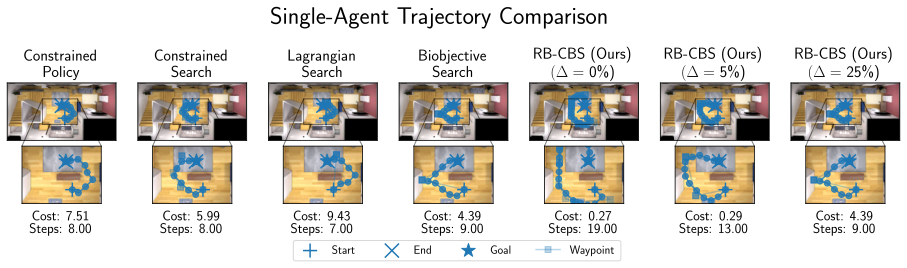
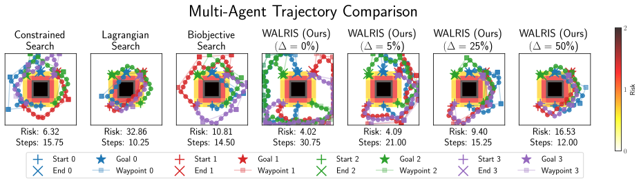
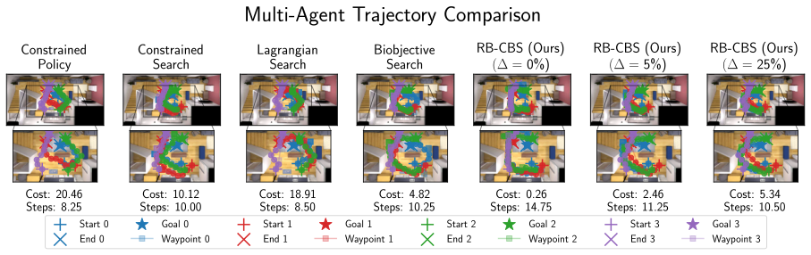
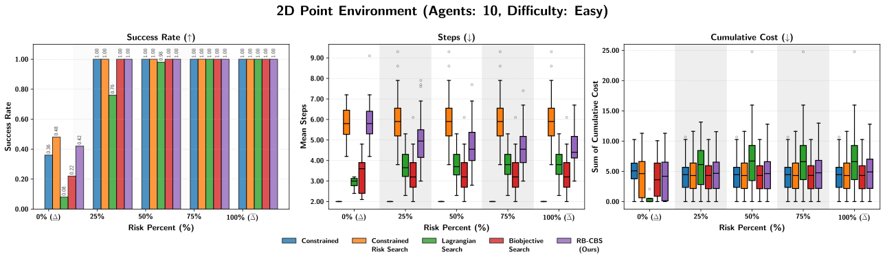
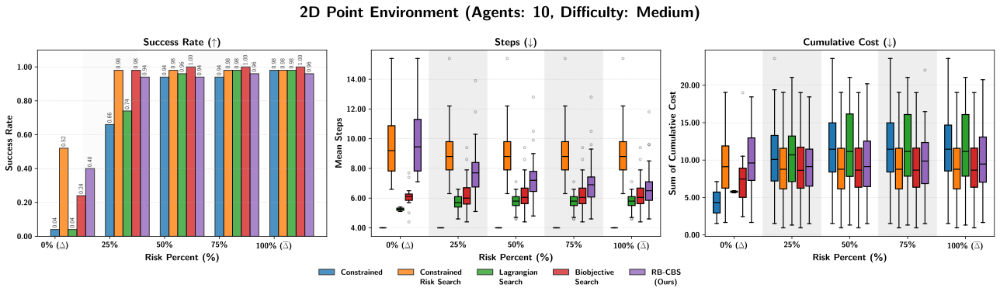
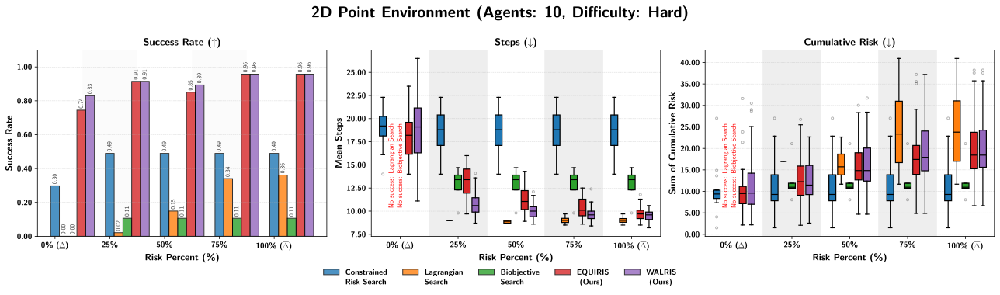
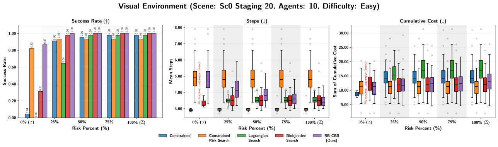
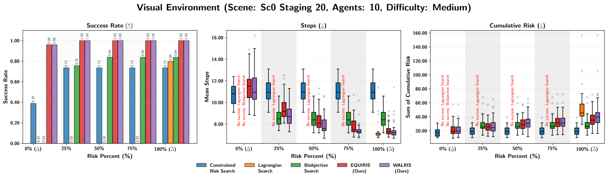
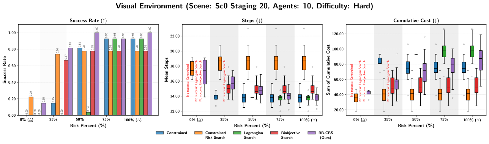
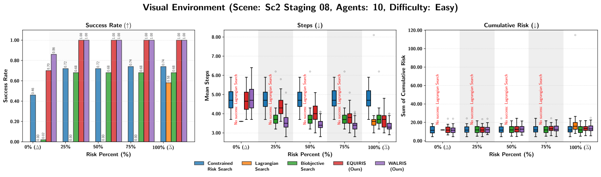
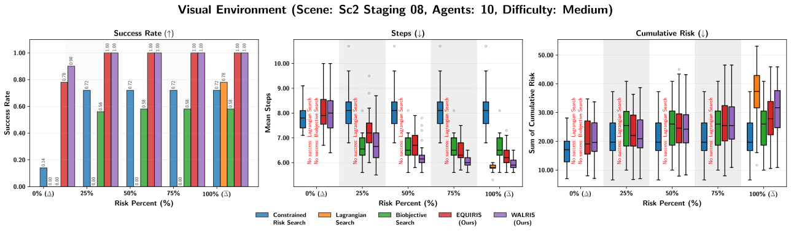
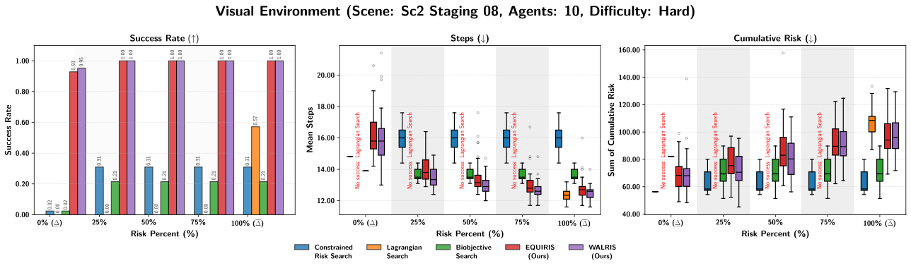
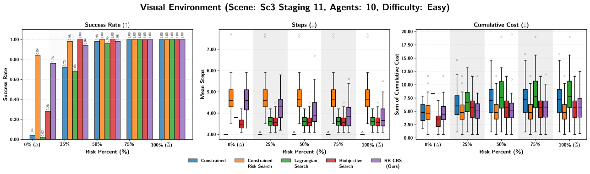
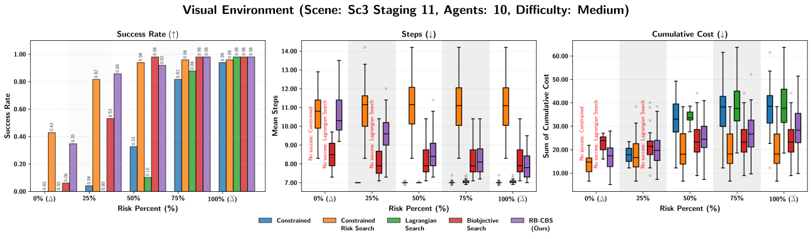
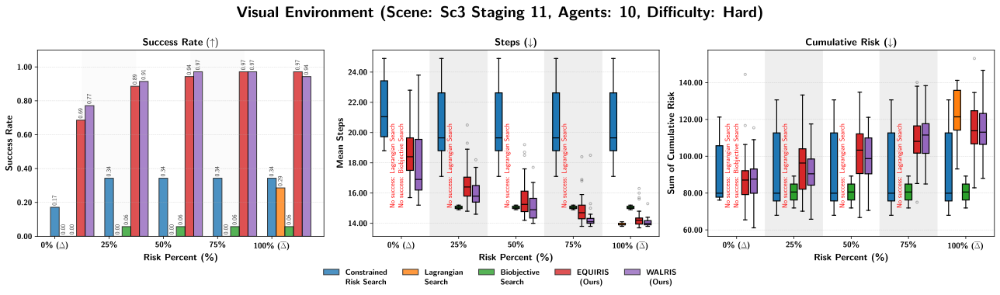